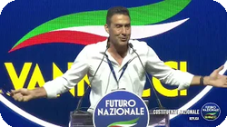

Programma Roberto Vannacci

- Presidente di Futuro Nazionale
- Fondatore di Futuro Nazionale
L'intervento di Roberto Vannacci alla Costituente delinea le direttrici programmatiche di "Futuro Nazionale", presentate direttamente al popolo durante la Costituente del movimento. Il discorso si propone come una visione organica dell'Italia, che spazia dalla sicurezza alla difesa dell'identità culturale, dall'energia all'economia, fino a toccare i pilastri fondamentali della società: la famiglia, la scuola, la sanità e il lavoro. L'impianto del programma si fonda su una netta contrapposizione a quella che viene definita come la visione ideologica della sinistra, proponendo invece un approccio basato sul merito, sulla valorizzazione delle eccellenze italiane e sul primato dell'interesse nazionale. Attraverso un'analisi che intreccia elementi storici, pragmatismo e una visione di lungo periodo, il testo articola proposte concrete con l'obiettivo dichiarato di restituire all'Italia sovranità, prosperità e fiducia nel proprio futuro.
Intervento di Roberto Vannacci sul Programma alla Costituente di Futuro Nazionale
13 Giugno 2026 - Roma
Video YouTube: https://youtu.be/zBRqoEEtSaM
E anche da questo vediamo che la cultura per noi viene dal basso, viene dal popolo, viene da voi, da tutti noi e ce ne occuperemo paese per paese, borgo per borgo, città per città. Adesso passo velocemente alle linee programmatiche, punto per punto.
Sicurezza e difesa
Sicurezza e difesa: se c'è un sentimento che in Italia non deve più lasciare il campo libero, è il sentimento della paura. Non deve più esserci ragione di avere paura per le nostre donne, per i nostri figli, i nostri anziani. L'Italia è la casa del popolo italiano e a casa propria ognuno deve essere sicuro. Per questo il progetto di futuro nazionale è quello di ripristinare le condizioni di sicurezza che hanno conosciuto i nostri padri e che molti noi ricordano della propria giovinezza. Non c'è spazio in Italia per i criminali, per la loro impunità.
Per il presunto diritto, la presunta libertà di fare male. La libertà è per il bene, per dare un'impronta personale alla vita e al bene di cui essa è portatrice. Invece per uccidere, per stuprare, per rubare, non ci sarà libertà. Ci saranno solamente le carceri e la tolleranza zero.
Contrariamente a quanto pensano alcuni esponenti della sinistra, che non poco più tardi di qualche settimana fa prendevano per i fondelli le nostre forze dell'ordine, li chiamavano pagliacci pagati per mangiare ciambelle a Torino.Ecco, per noi portare l'uniforme non è un peso, ma è un onore. Avere forze armate e forze di polizia all'altezza della loro missione è per noi italiani la garanzia della sicurezza e della pace. Ad altri piacciono gli eserciti europei, gli eserciti mondiali, magari quelli anche intergalattici, tipo Star Trek, ma noi vogliamo invece le nostre forze armate al servizio della nostra patria, della nazione italiana. A difesa a difesa delle minacce esterne, a presidio dell'interesse nazionale. Al rastrellamento delle metastasi di criminalità che si stanno creando in certi quartieri. In certi quartieri delle città più belle del mondo, le città d'Italia. Abbiamo uomini formati per ripristinare l'ordine in poche settimane, servono però strumenti normativi innovativi per metterli in condizioni di operare e ci stiamo lavorando e ci continueremo ad operare.
Remigrazione
L'immigrazione. L'immigrazione non è un capitolo del nostro programma, non abbiamo un programma di immigrazione, ma noi abbiamo un programma di remigrazione. La misura la misura è già abbondantemente superata, facendo i conti come li ha già fatti eh Lorenzo, siamo siamo circa al 12% di cittadinanze di di cittadini stranieri sul nostro territorio. L'omogeneità culturale è già compromessa. Quando l'immigrazione è di massa, la criminalità non è più un effetto collaterale, ma un effetto diretto e fisiologico. La sovrapposizione artificiosa di civiltà e culture diverse, con la creazione di società parallele e di ghetti, genera soggetti schizofrenici e l'impossibilità di riconoscere i valori e le istituzioni di uno stato, come proprio punto di riferimento.
Vogliamo che in Italia vivano gli italiani. E lo abbiamo detto ieri e lo ripeto oggi, senza nessuna paura di qualche professorino che mi vuole rieducare. L'Italia agli italiani.
E adesso andiamo sul campo della cultura, quella che dovrebbe essere solamente di sinistra, e infatti la sinistra ha cercato di convincerci per anni, per decenni, che l'Italia non è degli italiani, che il popolo italiano non esiste, che non ci sono quelle caratteristiche che lo definiscano e ci hanno detto da sempre, ma li sentite in televisione chiunque. Ma cosa dice Vannacci? L'Italia è da sempre, per antonomasia, terra di immigrazione, noi siamo un miscuglio di popoli, di civiltà. Bene, allora andiamo a fare qualche quantificazione. E eh nella pluri millenaria storia della nostra penisola, dall'impero romano ad oggi, l'immigrazione più impattante, quella più grande, maestosa, è stata quella dei longobardi. Erano il 4% della popolazione residente. I saraceni erano meno dell'1%. I normanni, che hanno invaso buona parte dell'Italia e che guarda caso hanno preso a pedate nel culo, scusatemi il francesismo, i maomettani, rimandandoli a casa alla fine dell'undicesimo secolo, erano meno dell'1% della popolazione residente. Questi Normanni, che erano fondamentalmente l'elite militare, quando invadevano i territori, non venivano con le famiglie, si sono mescolati totalmente nella popolazione italiana, si sono convertiti al cristianesimo, non hanno fatto ricongiungimenti familiari come fanno oggi invece gli stranieri. E questa è stata la differenza delle invasioni del passato. Oggi invece siamo al 12%, percentuali che non erano mai state raggiunte nella storia dell'Italia. Ci daremo da fare per tornare ad una soglia massima di questo tipo, quella dei longobardi, c'è qualcuno che ha qualcosa in contrario? Il 4%.
Il 4%. Espulsione per i senza titolo, stop ai decreto flusso da mezzo milione di nuovi ingressi, revoca della cittadinanza a chi commette gravi reati. L'Italia tornerà ad essere la casa degli italiani.
Energia
Energia. L'Italia è il paese più bello del mondo, non ho alcun dubbi su questo e lo dico dopo aver girato, non dico mezzo mondo, ma parecchi paesi di questo bellissimo pianeta. L'Italia è sicuramente il più bello. Oltre 2.000 anni di bellezza, di arte, di architettura, di filosofia, ma io ricordo a tutti che per poter esprimere la bellezza occorre anche prosperare, occorre lavorare, occorre produrre e occorre energia che ci consenta anche di poterci dedicare a qualche altra cosa. Oggi per prosperare e lavorare ci occorre l'energia sotto ogni sua forma e badate bene, questo programma scellerato di elettrificazione che sta portando avanti l'Europa ci farà cadere sempre più in basso e l'ho citato l'ho citato ieri. L'Italia ha un fabbisogno energetico annuale di 1.422 TWh di cui solamente il 20% è prodotto ed è consumato con energia elettrica. Di cui, di questo 20%, solamente il 34% è No, il il 40% è prodotto con energie rinnovabili. Le energie rinnovabili, l'eolico e solare, oggi rappresentano il 4% del fabbisogno totale energetico nazionale.
Il 50% del fabbisogno energetico nazionale è energia termica, quella che serve per far funzionare le nostre industrie, per riscaldare le nostre case, per far funzionare i nostri mezzi di trasporto e per concorrere alla ricchezza e alla prosperità nazionale. Uno stato senza autosufficienza energetica non è più sovrano. Può esserlo di diritto, ma non lo è di fatto. Futuro Nazionale sostiene la necessità della sovranità energetica che passa prima di tutto per la produzione interna con l'implementazione del nucleare di ultima generazione e la valorizzazione di ogni fonte alternativa all'avanguardia. In secondo luogo, questa sovranità ci deve derivare dalla capacità sovrana di negoziazione con gli altri paesi, perché non ce la faremo a soddisfare solamente con la produzione interna il nostro fabbisogno energetico, ma vogliamo essere liberi di comprare l'energia da chi ce la vende a miglior prezzo. E vogliamo essere liberi di avere un portafoglio energetico più ampio possibile, senza coscrizioni ideologiche e dogmatiche.
Vogliamo togliere gli incentivi in bolletta al in bolletta alle energie rinnovabili. Anche perché questi signori che sono amanti delle energie rinnovabili e che ci continuano a dire che sono convenienti, ma se sono convenienti perché le dobbiamo incentivare? Spiegatecelo. Se è conveniente non ha bisogno di incentivi. Ed guardate che gli incentivi in bolletta li paghiamo tutti noi e sono una parte cospicua. Non ve lo scrivono, fanno parte degli oneri di sistema, ma sono una parte cospicua delle vostre bollette che oggi gran parte degli italiani non riesce a pagare a fine mese.
Vogliamo abolire il Green Deal, vogliamo abolire la tassa sulla produzione di anidride carbonica, la famosa Carbon Tax. Vogliamo con un provvedimento che si farebbe in mezza giornata, neanche, passare all'ora legale permanente. Questo di una semplicità disarmante, disarmante. Ci farebbe risparmiare, secondo i calcoli di Terna, complessivamente 180 milioni di euro all'anno. 80 li risparmiamo già perché ce l'abbiamo sei mesi all'anno, ma estenderla agli altri sei mesi ci farebbe risparmiare altri 100 milioni di euro all'anno. Senza rinunciare a nulla, senza spendere nulla, senza disturbare gli animali che se ne fregano dell'ora legale o dell'ora solare e senza disturbare nessun umano.Perché l'ora è una convenzione che oggi sì che adesso siamo alle 13:27, lo abbiamo deciso noi, non ce l'ha imposto nessuno. Lo possiamo fare liberamente e questo ci porterebbe a un notevole risparmio energetico con nulla, con uno schiocco di dita.
E poi vogliamo continuare e incentivare lo sfruttamento delle biomasse, che sono il vero combustibile autocratico. Ce lo abbiamo a casa, le biomasse legnose, le biomasse vegetali, le produciamo noi. Oggi, grazie alle biomasse, produciamo l'equivalente di 7 miliardi di metri cubi di gas. Secondo calcoli fatti in maniera molto precisa, con pochissimi provvedimenti potremo arrivare con le biomasse a produrre l'equivalente di energia di 20 miliardi di metri cubi di gas, che rappresentano un terzo del fabbisogno nazionale di gas che noi oggi compriamo dall'Azerbaigian, dall'Algeria, dalla Libia. Questa è la realtà, ce l'abbiamo in casa. Ci dicono che non dobbiamo tagliare gli alberi perché siamo poco ecologici, ma stiamo scherzando? Noi dobbiamo gestirle le foreste, le nostre sono boschi e il nostro patrimonio silvestre non è mai stato così fiorente come oggi. Negli ultimi 80 anni è aumentato dell'80%. Non è mai stato così ampio, non è mai stato così fiorente, non è mai stato così sano. Non ci vengano a raccontare bufale, non ci crediamo.
Economia
Economia: Futuro Nazionale promuove uno sviluppo economico basato sul merito, sul valore dell'impresa e del lavoro, sulla libertà di esprimere le energie buone della creatività e della professionalità e sulla tutela dell'interesse nazionale. L'obiettivo è avere un'Italia sviluppata e prospera, in cui la crescita economica vada di pari passo col miglioramento delle condizioni sociali e la valorizzazione delle eccellenze italiane. Dobbiamo favorire un'economia che premia chi produce, che innova e lavora con impegno, rimuovendo gli ostacoli burocratici e riducendo il carico fiscale inaccettabile che oggi grava su imprese e su lavoratori. Si devono coniugare la libertà di impresa e la giustizia sociale, evitando sia il lassismo assistenzialista, chi sta seduto sul divano aspettando la paghetta di Stato, sia lo statalismo vessatorio, sia l'indifferenza verso chi è in difficoltà. Futuro Nazionale concepisce l'economia come strumento di libertà e prosperità diffusa, di miglioramento delle condizioni sociali e di autonomia sussidiaria, che permetta a famiglie e imprese di essere autosufficienti nell'esercizio delle proprie funzioni naturali ed organiche, senza il bisogno di essere sostituiti nelle proprie funzioni da consorzi di ordine superiore come lo Stato. Nel pieno rispetto del principio di sussidiarietà, come custodito e promosso da anche dalla dottrina sociale della Chiesa.
Tra il capitalismo sfrenato e lo statalismo comunista, ancora una volta non accettiamo l'imposizione di un bivio, ma scegliamo la terza via: l'interesse nazionale, fondato sulla libertà e il bene comune. Ma non posso parlare di economia se non parlo di impresa. Oggi le piccole e medie imprese rappresentano il 96% dell'economia nazionale. Non possiamo non considerare e non valutare le piccole medie imprese come un impulso strategico all'economia della nostra nazione. E come una forma di maggior rilievo per l'idea italiana di economia. Sono quelle per le quali siamo conosciute nel mondo. Siamo quelle per le quali siamo apprezzate nel mondo. Siamo quelle per le quali esiste il Made in Italy: le piccole e le medie imprese.
Nella nostra visione che si contrappone a quella sinistra dove saremmo tutti poveri, noi vogliamo, invece, essere tutti proprietari e, in certa misura, piccoli imprenditori. Per questo sosterremo le piccole e medie imprese con la sburocratizzazione e la riduzione della pressione fiscale, introducendo particolari incentivi anche per l'azionariato diffuso delle grandi società e la defiscalizzazione della distribuzione degli utili aziendali e dipendenti, anche sotto forma di partecipazione azionaria.
Altra cosa che vorremmo applicare alle piccole e medie imprese è l'aliquota forfettaria unica per il pagamento delle imposte. Ha funzionato benissimo con le partite IVA. Si sono moltiplicate le partite IVA grazie all'aliquota unica di contribuzione. Allora, se ha funzionato per le partite IVA, perché non deve funzionare per le piccole e medie imprese? E questo provvedimento solleverebbe da una montagna di adempimenti burocratici. Queste sono idee concrete che ci possono portare a un rilancio dell'economia italiana, della meritocrazia e delle piccole medie imprese che ci danno lustro in tutto il mondo e in tutto il pianeta.
Fisco
Passiamo al fisco. A chi è che piace pagare le tasse? Perché, insomma, io credo che siamo tutti convinti che, nonostante l'ideologia di sinistra, pagare le tasse non sia bello. Anzi, noi siamo convinti che pagare le tasse sia necessario per il sostentamento delle funzioni pubbliche svolte nell'interesse della nazione, ma solo di quelle. Ciò che fa la differenza è che noi vogliamo un fisco giusto, proporzionato, volto a spese buone e non allo spreco delle risorse che vengono incassate. La visione di futuro nazionale è innanzitutto quella di riconoscere ai fini fiscali il contributo allo sviluppo nazionale. A parità di reddito, chi fa figli sta già contribuendo al bene della nazione e si sta assumendo l'onere anche economico di tirare avanti nuovi italiani. La tassazione dovrà tenerne conto. Per questo introdurremo un quoziente familiare, come abbiamo già detto.
Inoltre, vogliamo azzerare gli sprechi che si accentrano nelle funzioni inutili, in quei progetti ideologici al costosissimo peso della gestione delle immigrazioni. Questi risparmi saranno funzionali a ricalibrare il peso della fiscalità e permettere a famiglie e imprese di tornare a fare figli, a lavorare, ad assumere, a rendere l'Italia un paese prospero e pieno di vitalità. Scuola e Università. Io l'ho detto tante volte, la scuola deve essere dura e selettiva. Ma non perché siamo cattivi. Non perché sono cattivo, io due figlie che vanno a scuola e non voglio il loro male, io voglio il loro bene. La scuola deve essere dura e selettiva perché la vita è dura e selettiva. Io non so la vostra com'è stata, ma la mia vita è stata dura e selettiva. E la scuola deve preparare a questa vita e non può preparare a questa vita se non ne ripropone l'essenza. È chiaro che la scuola deve consentire l'errore. Lo deve ammortizzare, deve preparare, deve allenare, deve addestrare, ma il risultato è quello: chi esce dalla nostra scuola deve essere pronto ad affrontare la vita.
E se oggi i nostri soloni della sinistra parlano di disagio giovanile, è forse anche perché la scuola di oggi, buonista, non prepara ad affrontare questa vita. La scuola italiana deve tornare a essere fiera e ambire a rimanere la migliore del mondo. Purtroppo, oggi è spesso utilizzata come laboratorio di indottrinamento ideologico. Le scuole pubbliche oggi abbondano in bagni neutri, con le sirene, o la lampada di Aladino messa come insegna del bagno, di Bella Ciao, di progetti gender, di corsi sulla eutanasia e sui diritti dei migranti. La scuola italiana, nel programma di Futuro Nazionale, torna a fare la scuola, a formare gli italiani di oggi e di domani.
Scuola e Istruzione
E la scuola di Futuro Nazionale risolve anche la crisi d'identità: da un lato gli istituti professionali svalutati e in cui spesso si fatica ad imparare un mestiere; dall'altro, la scimmiottatura degli istituti impressa ai licei con sovraccarico di scuola e lavoro e la tentazione continua di comprimere gli spazi per materie come la lingua di Roma, il latino, la filosofia occidentale. L'Italia, nei secoli, ha saputo eccellere in entrambi i campi della cultura. Ricordo che cultura deriva dal latino, colere, coltivare, coltivare il campo, coltivare lo spirito, produrre e conoscere. Non è vero che la cultura è solo pensare a qualche cosa di aulico. La cultura è anche lavorare il proprio campo. La cultura è anche produrre con le proprie mani. Questa è la vera cultura.
E quindi ci occorre una nuova visione capace di valorizzare i due polmoni di una società: la produzione di beni e servizi e la conoscenza approfondita delle radici e delle categorie per pensare la complessità, specialmente in un tempo di grandi trasformazioni come quella dell'intelligenza artificiale. Il nostro paese deve eccellere in tutti e due i fronti. Non è vero che tutti devono andare al liceo. Assolutamente, non è vero. L'ho detto anche alle mie figlie, senza nessun problema. Sono stato chiarissimo con loro, lo dico a tutti i giovani: fate ciò per cui nutrite una passione. Lasciate perdere. Non inventatevi di diventare scienziato, architetto, fatelo se vi piace. Ma se vi piace fare il falegname, fate il falegname! Se vi piace fare l'agricoltore, fate l'agricoltore! Abbiamo bisogno di scuole professionali integrate col sistema produttivo, cosa che oggi non abbiamo. Io ho parlato con centinaia di imprenditori e di industriali in Italia e la prima cosa che mi dicono: escono dalle scuole professionali e non sanno fare un tubo! Neanche quello! Perché altrimenti andrebbero a fare l'idraulico. Neanche il tubo sanno fare. Non c'è collegamento tra quello che necessita alle imprese e all'industria e quello che producono le scuole. Quasi tutti quelli che vengono poi inseriti nell'impresa devono fare corsi sussidiari per coprire i gap che la scuola professionale italiana non riesce a coprire. Questa è la realtà, quella che ho visto ovunque, e vorrei qualcuno che mi disse che non è vero, che mi dicesse che non è vero. E allora noi dobbiamo far ritornare la scuola a quello che è, un posto dove si impara a essere cittadini e dove si impara a essere professionisti.
Visto che l'Italia è una Repubblica fondata sul lavoro, noi a scuola dobbiamo imparare ad andare al lavoro, non crogiolarci dietro questioni teoriche che non interessano probabilmente a nessuno. Il tempo per fare castelli in aria di teoria ce l'avremo dopo la scuola, volontariamente, senza nessun problema, ma non a spese del contribuente. Dobbiamo creare cittadini e professionisti. Questo è il compito della scuola principale. Una scuola dura e selettiva, specialmente per quanto riguarda le superiori, non un centro di bivacco della gioventù né tantomeno un laboratorio del Partito Democratico. Ma dobbiamo dare una preparazione ai percorsi successivi al lavoro, all'università, con una selezione d'eccellenza e che si confronti con i bisogni reali del paese. Ma qualcuno si è chiesto perché i nostri i nostri studenti che escono dal liceo non ce la fanno a passare i test per andare all'università? Ma qualcuno se l'è chiesto il perché? Non sarà mica perché il liceo non forma più gli studenti che invece sono richiesti per una preparazione superiore? Non è forse perché il liceo è diventato troppo buonista, troppo lassista, troppo adeguato a ad abbassarsi al minimo invece che trainare verso il massimo? Un liceo che non lascia volare chi ha le ali, un liceo che si adegua ai minimi standard, questo è il problema che abbiamo. Allora come ho detto e come è stato l'impronta della mia vita, io non lascio indietro nessuno, ma non voglio neanche mettere le redini a chi ha la possibilità di volare. Questa è la scuola che sogno ed è questa la scuola che voglio per le mie figlie, che orgogliosamente ho mandato alla scuola pubblica, orgogliosamente, perché è la scuola pubblica che deve formare il futuro del paese, senza togliere niente alla scuola privata, dove ogni cittadino deve essere libero di mandare i propri figli e che contribuisce alla preparazione della nostra gioventù. Ma il punto di riferimento deve essere la scuola pubblica. Io non vorrei vivere in un paese dove viviamo noi, dove si spera di avere le risorse per mandare i propri figli alla scuola privata. Io vorrei avere un paese nella quale la gente che manda i figli alla scuola privata poi cambia idea e li manda a quella pubblica perché è migliore, perché insegna meglio, perché produce un prodotto che è più all'altezza. Questo vorrei. La selezione la si fa sulla base delle competenze e del merito ed è per questo che l'italiano dovrebbe scegliere la scuola pubblica: solamente perché è migliore, non perché è gratuita, non perché non devi spendere per mandarci tuo figlio, ma perché è migliore. Questo è il criterio che dovremmo utilizzare.
Lavoro
Il lavoro. La Repubblica italiana è fondata sul lavoro. Quindi chi non lavora è contro la Repubblica. Com'è che diceva San Paolo? Chi non lavora non mangia. Era un fascista San Paolo. Una cultura non vitale ha messo all'angolo il lavoro e ha creato sacche di assistenzialismo anziché mettere tutti in condizioni di lavorare. Giovani adulti che vivono di sussidi senza formarsi per imparare un mestiere, ragazzini che potrebbero aiutare l'attività familiare o imparare un mestiere non possono accedere al libretto di lavoro neanche per i lavori estivi a 14 o 15 anni. Scusatemi, io sono qua in piedi di fronte a voi. Prima qualcuno della stampa ieri si lamentava che erano stati troppo in piedi. Mi dispiace. Insomma, stare in piedi non è una grossa una grossa fatica, almeno non per me. Ma io sono cresciuto, sono cresciuto negli anni 80, ero adolescente negli anni 80 e credo che molti di voi hanno fatto la stessa cosa. E quando eravamo ragazzini, a 14 anni si andava a lavorare. A 14 anni si accedeva al libretto di lavoro. Non si andava in miniera, non si andava a fare lavori usuranti, c'era chi faceva l'aiuto bagnino, chi faceva il cameriere, chi faceva l'aiuto cuoco, chi faceva il ragazzo di bottega, chi era impiegato nell'attività familiare del padre. E non mi sembra che siamo cresciuti male, non mi sembra che abbiamo subito le vessazioni dei datori di lavoro, non mi sembra che la nostra società fosse talmente peggiore di quanto non vediamo oggi. Allora la prima proposta che fa Futuro Nazionale: ma perché non riportiamo il libretto di lavoro a 14 anni? Ma perché? Facoltativo, libero. Con le tutele, con tutte le tutele previste. Non li manderemo in miniera, saranno solo i volontari a poter espletare questo lavoro. Ma se un ragazzo durante la pausa estiva a 14 anni vuole fare per un mese il cameriere, ma perché non lo può fare? E magari si guadagna quei 1000 euro che gli consentono poi di fare quello che gli piace. Se vuole andare ad aiutare il padre o la madre che hanno il negozio di non so che cosa, ma perché non può essere regolarmente assunto? Perché non può fare l'aiuto bagnino in uno stabilimento balneare a portare il lettino, aprire gli ombrelloni ed essere regolarmente pagato? Ditemi il perché. Io non lo capisco, non ci arrivo. L'idea di Italia che abbiamo è quella in cui non si vive di speranze, rimpianti e desideri impossibili, ma quella in cui ci si rimboccano le maniche, come hanno fatto i nostri nonni, e si impara a fare il lavoro che serve, quello per cui sia sia possibile ottenere un posto di lavoro. Quando andavo quando ero in età universitaria, c'erano una miriade di giovani che facevano scienze politiche. Ma di quanti scienziati politici abbiamo bisogno in Italia oggi? Ma vogliamo educare i nostri giovani anche ad avere una prospettiva, a sapere quali sono i mestieri richiesti, a fare con passione quello che però è necessario poter fare, perché se tutti si mettono a fare gli scienziati politici poi il lavoro non c'è e nessuno si può lamentare dicendo, eh ma sono laureato ma faccio lo spazzino. Certo, se ci sono 950 milioni di scienziati politici, poi qualche scienziato politico dovrà fare anche l'operatore ecologico, non c'è dubbio. Peraltro, mestiere onorabilissimo e che tutti rispettiamo, anzi, li ringrazio sempre quando li vedo perché contribuiscono fattivamente alla nostra società, contrariamente a chi sta seduto su un divano.
Realizzare il proprio sogno, quello che vorremmo fare tutti, è una grande grazia. Non riuscire a realizzare il proprio sogno non dà diritto a non far niente. Se non siete riusciti a realizzare il vostro sogno di fare l'astronauta, non potete passare la vita a girare i pollici su una sedia. E deve anzi essere uno stimolo a trovare la propria eccellenza in una via diversa da quella che avevamo pensato.
Smettiamola di credere alle persone che dicono no, ma il lavoro non mi piace, volevo fare altro. Datevi da fare, rimboccatevi le maniche, andatelo a cercare il lavoro, battete strade, marciapiedi, negozi, spedite curricula. Oggi devo dire che abbiamo raggiunto un livello di disoccupazione bassissimo e su questo non ho problemi a dare il merito a questo governo. Siamo al 5% di disoccupazione, uno dei paesi che ha il tasso di disoccupazione più basso di tutta l'Unione Europea. Continuiamo su questo passo, ma non permettiamo a nessuno di pensare che lo Stato ti porti il lavoro in camera da letto. Il lavoro te lo vai a cercare, ti rimbocchi le maniche e ti vai a cercare il lavoro perché se non lavori non mangi.
Futuro Nazionale vuole ridare dignità a tutti i mestieri, tutti, perché tutto si può fare con dedizione ed eccellenza, ridando finalmente un'occupazione a tutti gli italiani, di oggi e di domani. Sanità: la sanità non è di sinistra. Gli ospedali, guarda caso, sono nati nel medioevo cristiano, non li ha inventati la sinistra. Altra cosa che i soloni dovrebbero imparare. Sono nati dal cuore pulsante della civiltà italiana, quella che molta sinistra denigra e pensa che non esista, pensa che siamo un coacervo di civiltà nato così, per caso, per uno starnuto fatto da qualcuno.
Sanità
Gli ospedali non sono nati per uccidere gli anziani e i malati, non sono nati per somministrare gonapeptil agli adolescenti e bloccare lo sviluppo dei caratteri sessuali dei ragazzini e delle ragazzine, come accade in tanti ospedali italiani di oggi. Non sono nati per pagare con risorse pubbliche le falloplastiche per chi dichiara di avere un'anima maschile intrappolata in un corpo di femmina o altre amenità volte a farci dimenticare che siamo anche il nostro corpo e non un coacervo di sensazioni e cieca ideologia.
Alla mostruosità del modello progressista di sanità noi risponderemo col recupero di risorse da riassegnare alle vere esigenze della sanità italiana, il taglio delle liste di attesa, la medicina preventiva, quella che si fa nelle scuole, nelle famiglie, in mezzo alla strada, la società. Abbiamo avuto qua un esponente ieri che ci diceva che non possiamo considerare normale avere un adolescente su tre sovrappeso eppure probabilmente a scuola non gli dicono nulla, eppure probabilmente la famiglia non lo educa a mangiare quello che deve mangiare e a muoversi dalla mattina alla sera, anzi, lo lascia seduto su un divano a mangiare il panino dei McDonald's. Dobbiamo ripartire da questa sanità, che non è solo quella degli ospedali.
La capillarità delle strumentazioni salvavita per eventi tempo-dipendenti, come l'arresto cardiaco. Le malattie cardio-circolatorie, se non erro, sono quelle che causano più morti, addirittura più dei tumori, poi magari qualche medico mi redarguirà, ma mi ricordo che c'era questa statistica. Non accetteremo che ci siano i soldi per fare esperimenti sugli adolescenti e che non ci siano per avere unità con emodinamica raggiungibile in tempo utile per salvare le persone dall'infarto. Una visione sovranista identitaria della sanità significa anche questo. E non parlo di ciò che ha già detto Lorenzo riguardo alle cure palliative, perché è già stato esposto, anche questo è un grande vacuum della nostra sanità. Ma parlare di sanità, parlare di sanità vuol dire anche parlare di sport. Mens sana in corpore sano e lo sport, lo sport è salute, lo sport è salute per tutti.
Giovani e Sport
Andate a vedere statisticamente nei giovani che fanno sport, negli adulti che fanno sport, negli anziani che fanno sport. Mio padre ha 92 anni, grazie a Dio, grazie a Dio, mio padre va a fare sport, a 92 anni, lo fa nel suo modo, in maniera lenta, in maniera dolce, lo fa e continua a essere in salute e mio padre non va all'ospedale, ha sicuramente una genetica che lo ha baciato in fronte, ma sicuramente anche lo stile di vita. E sono convinto che tra di voi ci sono tanti che hanno i propri genitori, i propri parenti, che per quanto ultra-genari, avendo avuto uno stile di vita sano, non hanno bisogno dell'ospedale, non hanno bisogno delle cure mediche. E questo stile di vita sano passa dalla dal movimento, passa dallo sport, passa dall'attività fisica. Noi siamo nati raccoglitori, abbiamo percorso chilometri del nostro pianeta per procurarci da mangiare, siamo nati come un fisico che deve lavorare fisicamente, non siamo nati per stare seduti dietro una scrivania e lo sport è proprio questo: è salute.
E vi dicevo, andate a vedere in questi giovani, estratti proprio dalla società sportiva, quant'è il loro peso sul Servizio Sanitario Nazionale. Andate a vedere sugli adulti che fanno sport quant'è il peso relativo di queste persone sul Servizio Sanitario Nazionale, è infinitamente più basso rispetto alle persone che non fanno sport, infinitamente. Oltretutto, i ragazzi che fanno sport e che lo fanno a determinati livelli, non li trovate la sera a bighellonare nelle birrerie, non li trovate la sera ad andare in giro con i coltelli, non li trovate la sera nei gruppetti di maranza e dei disagiati sociali, perché il giorno dopo si devono svegliare alle 6:00 per andare all'allenamento. Quindi lo sport non è solamente salute, ma è anche società, è benessere, è cultura, è civiltà. E oggi cosa possiamo detrarre dalle attività sportive per i nostri figli? Niente. Nulla. Oggi che sport fanno i nostri bambini, i nostri ragazzi nelle scuole? Quasi niente, quasi niente. Oggi giocano con la PlayStation. Perché noi di Futuro Nazionale, alla cultura del bivacco, preferiamo la cultura dell'azione e con il nostro programma di governo lo sport diventa un bene nazionale, per la formazione del carattere e del fisico degli italiani.
Non solo intensificando l'attività fisica nelle scuole, ma permettendo a tutti di praticare lo sport con l'aumento delle detrazioni per attività sportive. In particolare garantiremo che ogni bambino italiano possa praticare sport di squadra, di combattimento, di competizione, indipendentemente dalle condizioni economiche della famiglia. Lo sport non può essere un lusso, non deve essere un lusso, ma è un investimento sulla salute fisica e mentale della nostra patria. La famiglia e la natalità, altro punto importantissimo del programma.
Vi ricordate qualche anno fa il panda? Il panda, quello bianco nero, quell'orsetto simpatico, il panda? Ecco, il panda era in estinzione e per questo era diventato il simbolo del WWF. Oggi potremmo mettere un bambino italiano a fare il simbolo del WWF perché quello che è a rischio di estinzione è proprio l'italiano. Nel 2025 sono nati appena 355.000 bambini con un tasso di fecondità di 1,14 figli per donna, tra i più bassi d'Europa. Il saldo naturale, tra morti e nascite, è un abisso di meno 295.000 unità all'anno. Questa è la realtà nazionale. E non mi venite a dire che dobbiamo importare gli stranieri per fare fronte a questa necessità, eh? Qualcuno c'aveva già pensato all'ONU e aveva fatto un pamphlet, un bel una bella pubblicazione che si intitolava, pubblicazione edita nel 2000, "l'immigrazione di sostituzione", replacement migration, andatevelo a cercare e poi qualcuno mi dice che quando si parla di immigrazione di sostituzione si parla di un complotto. Era stato pianificato dall'ONU, il massimo delle agenzie globaliste che abbiamo, l'ONU, colui che vorrebbe gestire il pianeta al posto degli stati sovrani. Aveva già pianificato l'immigrazione di sostituzione e aveva strigliato le orecchie all'Italia dicendo che avremmo dovuto importare più africani per fare fronte alla nostra scarsa natalità.
Famiglia
La famiglia è la cellula fondamentale della società. L'Italia si fonda e regge sulle famiglie italiane. Non vi è un solo italiano al mondo che non sia stato generato da un padre e da una madre italiana ed è di tutta evidenza che l'esistenza di un popolo protratta nel tempo passi dalla procreazione e dall'educazione della prole. Questa è l'essenza della famiglia e del matrimonio, Matris Munus.
Mi ha aiutato Lorenzo, non è non è roba mia. Matris Munus, cosa vuol dire? Compito, ufficio della madre. Questo deriva dal matrimonio. Per questa ragione Futuro Nazionale punta sulla riattivazione del saldo demografico italiano e sulla protezione materiale e culturale della famiglia, primo patrimonio della nazione. Faremo in modo che la famiglia esista ancora e prosperi. Proponiamo l'introduzione del quoziente familiare con drastica riduzione dell'IRPEF per ogni figlio messo al mondo e il fattore famiglia in tutte le imposte come l'IMU. A chi ci chi dirà che non ci sono i soldi per la famiglia, rispondiamo che non solo i soldi sono stati trovati per i fallimentari politiche di integrazione, ma anche che per ogni euro speso in redditi di cittadinanza e analoghi per uomini rimasti a casa senza poter dare un contributo alla nazione, fino a prova contraria, non esiste la gravidanza maschile. Avremmo potuto investire per dare la libertà di stare a casa a quelle donne che lo avrebbero liberamente scelto per generare ed educare gli italiani di domani. Assistiamo a paradossi sistemici, donne che vorrebbero fare figli e non possono permetterselo, che liberamente sceglierebbero anche di stare a casa con famiglie numerose e lasciare i propri posti di lavoro ad uomini che oggi sono invece a casa con sussidi pubblici perché non trovano lavoro. A reddito improduttivo di cittadinanza, preferiamo il reddito produttivo di maternità. Non dare più libertà di scelta a tutti. Futuro Nazionale riequilibrerà queste distorsioni sistemiche riattivando il saldo demografico della nazione, più libertà di scelta a tutti e questa libertà di scelta deve essere sostenuta dalla possibilità di essere liberi.
Giustizia
Giustizia: ieri abbiamo sentito la testimonianza di una nostra concittadina che ci ha commosso tutti e ho voluto che fosse qua con noi perché questa è la dimostrazione pratica che la giustizia non funziona, la giustizia non funziona e noi dobbiamo partire da questo dato di fatto per prendere dei provvedimenti che la riportino a funzionare. Il partito credi in uno Stato che garantisca ai cittadini ordine, legalità e tutela effettiva dei diritti ponendo fine a impunità e zone franche. Siamo convinti che i crimini vadano efficacemente retribuiti, gli voglio retribuire i crimini, cioè puniti. Questa è la retribuzione dei crimini, la punizione e che la rieducazione sia un effetto della punizione. Ti rieduchiamo perché fa parte della pena che tu devi scontare. Viviamo in un paese in cui vengono permesse permesse denunce a piede libero anche in casi di flagranza di reati violenti, perché le carceri sono affollate. Futuro Nazionale propone due strumenti: un immediato piano di costruzione di nuove carceri e la liberazione di posti tramite l'immediato rimpatrio dei detenuti non italiani. Abbiamo bisogno di una giustizia che tuteli le vittime della criminalità, non i criminali. Nessuno tocchi Caino. No, nessuno tocchi Abele, Caino va in carcere.
Abbiamo bisogno di una giustizia più giusta, smantellando anche il sistema delle correnti ideologizzate della magistratura che rappresenta un ostacolo ai tanti, e dico tanti, tantissimi magistrati capaci e che hanno scelto quella carriera per svolgere un servizio alla nazione, non per portare avanti la lotta politica con altri mezzi. Perché abbiamo tantissimi magistrati capaci, che vogliono fare il magistrato, che vogliono rendere servizio alla nazione e che aborriscono l'idea di fare politica con altri strumenti. Tantissimi, sono una maggioranza, ne sono convinto.
Femminicidio
La sinistra ha il vizio di provare a vincere con strumenti diversi da quello delle elezioni. Libereremo la magistratura d'eccellenza dalle sabbie mobili delle componenti ideologizzate e ridaremo agli italiani un sistema garantista e capace di correggere e giudicare prontamente le proprie stesse storture. Negli ultimi anni una cultura ideologica dimentica della tradizione giuridica romana ed europea, classica, ha imboccato la via della ridefinizione del diritto penale, su categorie gramsciane, proprio le categorie gramsciane, ovvero volte alla creazione di un nuovo senso comune. Io uso il diritto penale per creare un nuovo senso comune. Una sorta di vaccinazione nei confronti di tutta la civiltà. Secondo tale svolta i reati andrebbero tipizzati, basta pensare al femminicidio o all'omofobia, sulla base delle caratteristiche della vittima, così da indurre una ipotetica trasformazione culturale tramite la proclamazione della norma in quanto allusiva ad uno stato di emergenza per fasce specifiche e tramite la repressione specializzata. Ecco che nasce il femminicidio.
Io considero che un reato sia più o meno grave in base al sesso di chi lo compie o di chi lo subisce e quindi tipizzo un reato non in base al reato, ma in base alla vittima, che è un'assurdità! Serve per fare il lavaggio del cervello alla popolazione e alla cittadinanza. Per noi, più semplicemente, non è questa la funzione del diritto penale, la cui suddivisione in fattispecie non ha una ratio pedagogica ed ideologica.
La Casa
La casa. La casa di proprietà familiare è da sempre il nemico di chi vuol ci vuole asserviti e in vendita. Sovranità per il popolo italiano significa anche politica abitativa. Siamo la nazione in Europa che credo abbia il più alto tasso di proprietari di casa, circa l'80% e qualcuno ci vuole già mettere le mani sopra, anche con questa scellerata direttiva Green Deal delle case green, che svaluterà le vostre proprietà e le metterà in vendita al miglior offerente.
Il problema abitativo è il principale ostacolo materiale alla scelta di avere figli. Un immobile oggi costa mediamente tra i 180 e i 250.000 euro, mentre i giovani under 35 guadagnano mediamente tra i 24 e i 28.000 euro lordi all'anno. Senza l'aiuto della famiglia d'origine si rimanda il matrimonio, si rimanda la casa, si rimandano i figli, si rimanda la famiglia, si rimanda e si distrugge l'Italia.
Le graduatorie delle case popolari sono invase di persone non italiane! Stiamo regalando il nostro patrimonio edilizio pubblico all'ultimo arrivato e lasciamo le nostre famiglie in grande difficoltà. Regione Emilia Romagna, cito quella perché ne conosco i dati, 12,5% sono gli stranieri che abitano in Emilia Romagna e il 25% dell'edilizia pubblica è data agli stranieri. Questa è la realtà dell'Emilia Romagna e che penso possa essere replicata in qualsiasi regione d'Italia.
Ve le ricordate le Sacre Scritture? Ama il prossimo tuo come te stesso. Per lo Stato italiano il prossimo, il più vicino, è innanzitutto il cittadino italiano, è questo in cui vogliamo riportare la nostra la nostra politica. Futuro Nazionale sosterrà in Parlamento una revisione della normativa per i criteri di accesso alle case popolari introducendo il requisito della cittadinanza. Introdurremo anche il mutuo tricolore, un piano di finanziamento per l'acquisto della prima casa garantito dallo Stato.
Cultura
Passo alla cultura. L'Italia è il paese più importante della storia mondiale e la sua cultura rappresenta il cuore dell'Occidente intero. Qui in Italia, qua, a Roma, qua in questo posto fantastico è nato l'impero romano. Qua i popoli del Mediterraneo intero sono stati uniti. Qui la religione di Cristo ha posto il proprio il proprio centro e Dante ci diceva onde Cristo è romano. Qui hanno avuto le proprie radici i più importanti passaggi dello sviluppo della cultura medievale e rinascimentale. Quella grandezza per l'Italia è ambizione, ma è soprattutto vocazione e inclinazione naturale. Può esserlo ancora grande, deve esserlo ancora grande l'Italia. Rilanciare oggi la cultura italiana significa liberarla dalla burocrazia che la soffoca, dal politically correct, c'è qualcuno che vorrebbe velare le nostre statue, c'è qualcuno che sostiene che ci siano troppe statue di uomini e dobbiamo aumentare le statue delle donne, c'è qualcuno che vorrebbe distruggere quei monumenti che richiamano a periodi della storia che a lui non aggradano. Siamo di fronte a questi soggetti, cioè distruggere i monumenti come i talebani hanno fatto con i Buddha di Bamiyan, come l'ISIS ha fatto con le cappelle con le chiese cristiane a Palmira. Volevano buttare giù la stele fatta di fronte allo stadio olimpico. Questa è la realtà nella quale ci troviamo e parliamo di cultura con la sinistra.
Rilanciare la cultura italiana significa significa liberarla dalla democrazia, significa detassarla, permettere la rinascita del mecenatismo, lasciare che l'arte respiri senza il peso di uno Stato che tassa anche la creatività. Significa educare i nostri figli alla bellezza fin dalla scuola materna, perché chi cresce con Raffaello, con Dante, con con Giotto, con Manzoni, diventa un uomo diverso, più libero, più consapevole, capace di conoscere la profondità del reale. E significa anche richiamare a casa molti italiani che se ne sono andati, gli artisti, i pensatori coraggiosi, i ricercatori che l'Italia ha formato e che l'economia ha costretto ad andarsene. Il talento italiano deve tornare a fecondare la la consapevolezza culturale della nazione italiana.
Commercio
Commercio, anche qua totalmente connesso con l'economia. Uno dei tratti fondamentali di una società è lo scambio, esso sorge naturalmente dal fatto che più famiglie si mettano insieme per scambiare i beni rispettivamente prodotti e procurarsi il necessario. Ad un livello di maggiore complessità sociale lo scambio viene mediato dal commercio, da coloro che si occupano di selezionare, spostare, proporre beni prodotti da altri e fornire un servizio alla clientela. Purtroppo nel mondo globalizzato l'equilibrio del commercio nazionale ha spesso subito delle gravi distorsioni che hanno impoverito il nostro paese a vantaggio di agenti terzi. Futuro Nazionale vuole tutelare la tradizione commerciale italiana. Ciò significa sgravare di tutte le tasse occulte, ovvero degli appesantimenti burocratici i nostri commercianti, tutelarli dalla concorrenza sleale di soggetti stranieri che aprano attività in Italia per poi chiuderle senza garantire il pagamento delle imposte. Succede spessissimo, esercizi commerciali che vengono aperti e dopo tre anni chiusi perché dopo tre anni arriva l'agenzia dell'entrare a verificare che cosa hai fatto, no? Se tu lo chiudi entro tre anni e sparisci quelle tasse non le hai pagate. Che tengano conto dell'impatto del commercio online sulle grandi piattaforme, che rischia in un contesto di ridotto potere d'acquisto per le famiglie di far resistere solo chi ha le spalle molto larghe. Dobbiamo tutelare la tradizione, i negozi non sono solo commercio, sono un presidio sociale. Dobbiamo traduzia dobbiamo tutelare la nostra identità. Il servizio di vendita non è solamente ti do un bene e prendo del denaro, è conoscenza, capacità di selezione del prodotto, assistenza di qualità alle scelte di mercato fatte dai cittadini. Ogni negozio italiano ha una sua storia, spesso è familiare, fatta di trasmissione di conoscenze e capacità che internet non può affiancare e non può neanche sostituire. Il negozio è luogo di incontro, di scambio di idee, di società, di circolazione delle proposte, di dimensione umana, si parla, si discute e non è solamente quello dello scambio economico. Ecco perché io ho veramente plauso all'iniziativa avuta da Caterina Galli sull'adesivo del negozio italiano. Siamo stati paragonati a quelli che distinguevano con la stella di David i negozi degli ebrei. No, mi dispiace. Noi con questo con questo adesivo di negozio italiano vogliamo veramente premiare chi ha fatto della propria vita una missione e ha messo nel proprio negozio la tradizione, la cultura, il lavoro, la fatica, il saper fare e la genuinità dei prodotti che gli italiani mettono in vendita. Questa iniziativa e spero che possa espandersi il più presto possibile in tutta Italia.
Agricoltura
Agricoltura, l'ho detto prima, l'ho detto prima, coltivare il campo è un'attività culturale e lo continuo a sostenere. Lo continuo a sostenere. Altro che i contadini ignoranti. Ce ne fossero di contadini ignoranti come i nostri, ce ne fossero. L'agricoltura italiana non rappresenta soltanto un settore economico, essa è un presidio sociale, produttivo e culturale. Chi difende il corpo e campo difende la propria famiglia, la propria casa, la tradizione, la cultura, l'identità stessa che noi rappresentiamo e che non potrebbe esistere se non ci fossero quei prodotti che senza un'agricoltura italiana e nazionale non potrebbero esistere. Dove scompare un'azienda agricola non si perde solamente produzione, si perde manutenzione del territorio, si perde comunità, si perde identità. Negli ultimi decenni abbiamo assistito a un progressivo abbandono delle campagne, soprattutto nelle aree interne e montane. Il reddito agricolo è diventato insufficiente a garantire un tenore di vita dignitoso, scoraggiando il ricambio generazionale e provocando lo spopolamento di interi territori. Io l'ho detto tante volte. L'agricoltore, come il cacciatore e il pescatore sono i presidi della nostra foresta, sono i presidi della nostra ecologia, sono i presidi del nostro ambiente. L'agricoltore, se vuole produrre, deve tutelare il proprio campo, altrimenti l'anno dopo muore di fame. Il cacciatore, se vuole cacciare, deve tutelare l'ambiente boschivo e silvestre, altrimenti l'anno dopo non caccia più. Il pescatore, se vuole pescare deve tutelare i fiumi, i torrenti e il mare, altrimenti l'anno dopo non pesca più. Usciamo da queste ideologie assurda, usciamo da questo dogmatismo al limite del ridicolo e ridiamo fiato a chi effettivamente tutela il nostro paese e tutela le nostre campagne e i nostri boschi. Le politiche europee degli ultimi anni hanno spesso perseguito obiettivi ideologici anziché scientifici. Le strategie Green Deal e farm-to-fork hanno imposto riduzioni produttive, limiti all'utilizzo di strumenti tecnici e chimici consolidati e obiettivi senza adeguati valutazioni economiche e produttive. Futuro Nazionale ritiene che la sostenibilità ambientale non possa essere perseguita a scapito della sostenibilità economica e delle aziende agricole italiane.
Acqua
Altra questione che riguarda agricoltura, energia e vita. Acqua. Piccolo piccolo piccolo aneddoto. Lo so che sto andando lungo, scusatemi, ma va veramente vale la pena. Acqua. Quando sono andato in Somalia nel dicembre del 1992 ho scoperto che i somali chiamavano l'acqua bio e ci facevano bio, bio, bio, bio, bio perché volevano l'acqua. Io non so se sia un caso, ma bio dal greco significa vita. E se in Somalia la parola acqua forse dico forse, deriva dal greco che significa vita, non fa altro a consolidare il concetto che l'acqua sia la vita. E noi non possiamo gestire l'acqua come se fosse l'ultimo dei rifiuti, come stiamo facendo oggi. Non possiamo pensare di non gestire l'acqua come se fosse la fonte unica della nostra esistenza su questo pianeta e del nostro benessere. L'accesso all'acqua è la grande infrastruttura agricola del ventunesimo secolo. I nostri agricoltori hanno bisogno di acqua. L'agricoltura irrigua può produrre fino a otto volte più dell'agricoltura asciutta e rappresenta una condizione indispensabile per gran parte delle produzioni agricole e zootecniche. Per questo Futuro Nazionale propone un grande piano nazionale dell'acqua che preveda il completamento della rete irrigua nazionale e la riduzione delle perdite di rete idriche naturali.
Non solo, che preveda la costruzione di una quantità numero numerosissima di dighe, dighe sulle Alpi, dighe sugli Appennini, dighe in Sicilia, dighe in Sardegna. Noi abbiamo un'acqua meteorica che rappresenta dieci volte la necessità dell'acqua che noi abbiamo nella nostra nazione. Il problema è che questa acqua se ne va e abbiamo tutto un mondo di soloni di sinistra, ambientalisti che ci dicono che le dighe non devono essere costruite perché limitano la possibilità di risalita delle anguille o dei salmoni. Beh, nelle anguille e i salmoni vadano da un'altra parte. Noi le dighe le vogliamo costruire. Vogliamo costruire queste dighe che ci danno sia la possibilità di gestire le acque, sia la possibilità di gestire l'agricoltura, sia la possibilità di creare, di generare energia pulita ed immagazzinabile, perché l'energia idroelettrica è l'unica energia rinnovabile che può essere immagazzinata, ripompando a monte l'acqua, senza alcun problema. L'unica! E qua mi spendo ancora una volta per la diga di Vetto, tra Parma e Piacenza, un progetto di ottanta del 1979 che è stato fermato dai soliti soloni che hanno vista prima le lontre, poi le anguille, poi le alborelle, non so che cosa e che continuano a non volere una diga che darebbe respiro a tutta l'agricoltura della piana parmense e di Reggio Emilia, dove si producono tra le migliori eccellenze agroalimentari della nostra nazione. E questo vale per le dighe di tutta Italia. Un piano dighe nazionali.
Pensioni
Pensioni! Eh, ve lo, adesso parla il baby pensionato. Da anni le nostre pensioni sono sotto attacco. Quasi fossero un privilegio, no? Chi è in pensione è un privilegiato, secondo qualcuno, anziché la remunerazione di contributi pagati con il sacrificio di una vita e di lavoro. Perché io mi inorridisco delle pensioni date a chi non ha, a chi non ha lavorato, non delle pensioni date alle persone che hanno lavorato. Io mi stupisco delle pensioni che vengono date a chi non ha un anno di contribuzione o chi ne ha 5, 6, 7, non a chi ne ha 44. Questo è lo scandalo. Certamente il sistema pensionistico deve essere sostenibile, ma la sostenibilità di lungo termine non si ottiene con continui rinvii dell'età pensionabile. Si ottiene con una base demografica forte. Il nostro sistema pensionistico è in difficoltà per due ragioni: la prima è la cattiva gestione delle risorse contributive nei decenni, la seconda è che abbiamo una popolazione anziana e in pensione, senza che ad essa corrisponda un'altrettanto nutrita schiera di giovani che producono e contribuiscono. Il mito dei migranti che ci avrebbero pagato le pensioni, secondo la signora Boldrini, fa acqua da tutte le parti, perché eventualmente quei migranti che lavorano, la pensione la pagano a loro stessi. Non dica bufale, signora Boldrini. Io la mia pensione me la sono pagata e chi lavora oggi se la paga e sono un artificio contabile che vede usati i contributi pagati oggi per i pensionati di oggi. Ma ognuno di noi la pensione se la paga da solo e se un migrante viene da noi e lavora e si paga la pensione, se la paga per se stesso, non per gli altri. Non diciamo bufale. Oltretutto i livelli retributivi e contributivi medi degli immigrati sono bassissimi e il loro livello contributivo non garantirà a loro una pensione che sarà invece garantita da chi lavora con un livello contributivo più alto, non perché è più bello, ma perché ha una specializzazione, una professionalità più elevata. Questo è la realtà dei fatti.
Gli immigrati non ci pagano nessuna pensione. Futuro Nazionale promuove la rinascita demografica dell'Italia, ripristinando così la tenuta economica della finanza pubblica e anche del sistema pensionistico. Innova, inoltre, gli strumenti di investimento delle risorse contributive che devono essere impiegati in fondi che promuovono lo sviluppo economico italiano. In questo modo le risorse economiche accantonate dagli italiani possono crescere nel tempo ben oltre l'inflazione e contemporaneamente far prosperare l'economia nazionale. Solo un piano serio di questo tipo sarà possibile interrompere in modo strutturale l'allungamento dell'età pensionabile, smettendo di illudere gli italiani in campagna elettorale per poi ogni volta tornare ad aumentare la soglia dell'età. Questo è l'unico modo per riuscire a dare sostenibilità alla nostra vita lavorativa, secondo noi, e lo perseguiremo.
Signori, io volgo al termine. È chiaro che questa presentazione del programma non ha potuto toccare tutti tutti i settori, tutte le singole attività, ma credo che sia stata abbastanza completa. Credo che oggi i giornalisti non diranno più che Vannacci si occupa solo di sicurezza e di immigrazione e credo che abbiano capito anche anche attraverso l'esposizione di di oratori di grande caratura, e vi posso assicurare che ne abbiamo avuto tanti che sono passati su questo palco e essere di grande caratura non vuol dire avere grandi titoli. Certo, i titoli sono un riconoscimento della propria attività professionale, ma secondo me ci sono oratori di caratura anche tra persone molto semplici, che magari non hanno fatto scuole alte, ma che sono andati alla scuola della vita. Anche loro sono oratori di caratura, assolutamente. Lo credo fermamente. E credo che oggi si sia dimostrato anche un altro fattore importantissimo, al quale tengo tantissimo e sul quale mi dedicherò anima e corpo nei prossimi mesi e nei prossimi anni.
Il Partito
Hanno definito Futuro Nazionale il partito di Vannacci. Non è vero. Futuro Nazionale è il vostro partito. Non è il mio partito. Vannacci Vannacci oggi ha fatto il frontman. Ha fatto quello che va su Mediaset, sulla Rai, che viene intervistato dai giornali, che risponde alle domande imbarazzanti, molto spesso ripetitive, eh, Vannacci vuole le classi separate per gli invalidi, Vannacci è un omofobo, Vannacci se la prende con gli omosessuali, sempre le stesse, oh, sembra un disco incantato. E invece oggi avete visto che il partito è fatto da tante teste, da tante menti, che ragionano, che producono, che portano avanti, che sono instancabili nella loro opera. Siete tutti voi. Abbiamo visto solo una minima parte di voi venire qua. E vi posso assicurare che Futuro Nazionale, e su questo prendo l'impegno, non sarà il partito dei capi. Non sarà il partito dei capi bastone, di quelle persone che una volta raggiunta una volta raggiunto l'incarico o la posizione di responsabilità, non fanno altro che allontanare le altre persone in gamba, perché hanno paura di mettere in gioco la propria posizione. No, no. Io per primo io per primo mi metto in gioco ogni giorno. Io voglio che Futuro Nazionale sia il partito dei leader, perché il primo compito di un leader è quello di formare altri leader.
Formare altri leader. Io mi voglio attorniare delle persone più capaci, più in gamba, della sporca dozzina che riesca a compiere le cose e che mi facciano vivere, che siano molto più intelligenti, più preparate, più pronte di me. Non ne ho assolutamente alcuna paura. Sogno un partito in cui Vannacci è l'ultimo dei poveracci che sta là e che ci sono tutte queste persone che mi fanno risplendere della luce loro. Così io potrò starmene tranquillo, potrò passare più tempo con la mia famiglia e potrò vivere di luce riflessa. E voglio che questa sia sia l'attività che ogni persona dotata di un incarico di responsabilità faccia in Futuro Nazionale, attorniatevi di gente in gamba, attorniatevi di persone capaci. Attorniatevi di persone belle, perché la bellezza salverà il mondo. Krasatà spasiot mir! La bellezza è invasiva, la bellezza è contagiosa e su questa bellezza non hanno ancora trovato il vaccino.
Grazie a tutti voi. Grazie!
Sintesi del Programma Futuro Nazionale
Ecco una sintesi strutturata dei punti programmatici presentati nel discorso:
-
Sicurezza e Difesa: L'obiettivo è ripristinare la sicurezza percepita, eliminare l'impunità per i criminali e promuovere una politica di "tolleranza zero". Le Forze Armate e di Polizia sono considerate un punto di riferimento fondamentale, da supportare con strumenti normativi innovativi per garantire l'ordine nazionale.
-
Immigrazione e Identità: Viene proposta la "remigrazione" per riportare la quota di cittadini stranieri a una soglia definita storicamente (riferimento al 4%). Si mira a contrastare la sovrapposizione culturale e la creazione di ghetti, favorendo l'omogeneità nazionale.
-
Energia: Il focus è sulla sovranità energetica, da perseguire tramite l'implementazione del nucleare di ultima generazione, la valorizzazione delle biomasse e una negoziazione più libera sui mercati. È prevista l'abolizione del Green Deal, della Carbon Tax e degli incentivi in bolletta alle rinnovabili, oltre all'adozione dell'ora legale permanente.
-
Economia e Fisco: Il programma punta a una "terza via" tra capitalismo sfrenato e statalismo, basata su merito e tutela dell'interesse nazionale. Si propone l'introduzione di un'aliquota forfettaria unica per le piccole e medie imprese, la sburocratizzazione e l'adozione del quoziente familiare per una tassazione più equa che tenga conto del contributo demografico.
-
Scuola e Università: Si auspica un sistema scolastico "duro e selettivo", capace di formare cittadini e professionisti in linea con le esigenze del mercato. Viene promossa una maggiore integrazione tra istituti professionali e sistema produttivo, respingendo ogni forma di "indottrinamento ideologico".
-
Lavoro: Si propone il ripristino del libretto di lavoro a 14 anni (su base volontaria e tutelata) per favorire l'apprendimento precoce di un mestiere. Viene enfatizzata la necessità di rimboccarsi le maniche, respingendo l'assistenzialismo in favore della dignità del lavoro produttivo.
-
Sanità e Sport: La sanità deve focalizzarsi sulla prevenzione e sul taglio delle liste di attesa, evitando progetti ideologici. Lo sport è promosso come strumento di salute pubblica, benessere sociale e formazione del carattere, con un aumento delle detrazioni fiscali per le attività sportive.
-
Famiglia e Natalità: La famiglia è definita la cellula fondamentale della società. Si propongono misure concrete per contrastare il calo demografico, tra cui il quoziente familiare e l'incentivo al "reddito di maternità" in alternativa a sussidi improduttivi.
-
Giustizia: Il sistema giudiziario deve tutelare le vittime e non i criminali. Il piano prevede la costruzione di nuove carceri, il rimpatrio immediato dei detenuti stranieri e il superamento del sistema delle correnti ideologizzate nella magistratura.
-
Casa: Viene proposta la priorità ai cittadini italiani nell'accesso alle case popolari e l'introduzione di un "mutuo tricolore" garantito dallo Stato per favorire l'acquisto della prima casa.
-
Agricoltura e Acqua: L'agricoltura è vista come presidio di identità e territorio. È previsto un grande piano nazionale per l'acqua, che includa la costruzione di dighe per scopi irrigui ed energetici, superando i vincoli ambientali ritenuti ideologici.
-
Pensioni: La sostenibilità del sistema deve poggiare su una base demografica forte. Si intende innovare gli strumenti di investimento delle risorse contributive, promuovendo fondi che sostengano lo sviluppo economico nazionale.